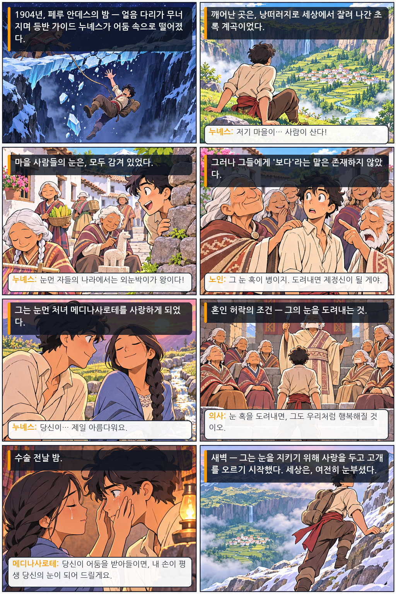
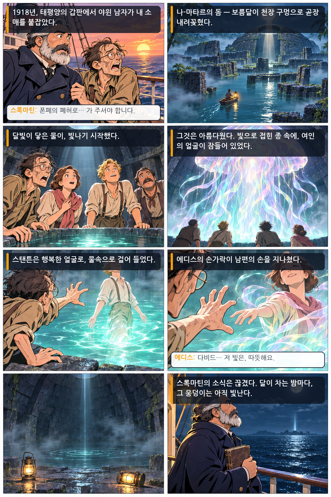
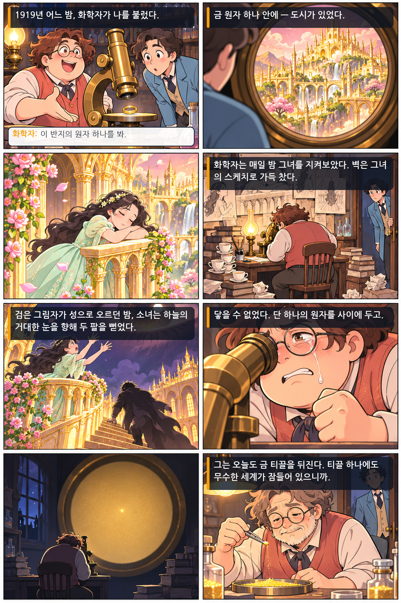
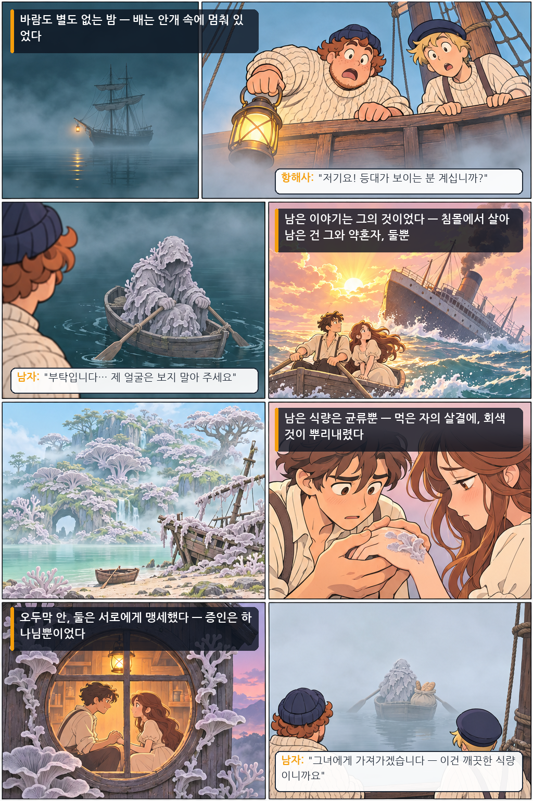
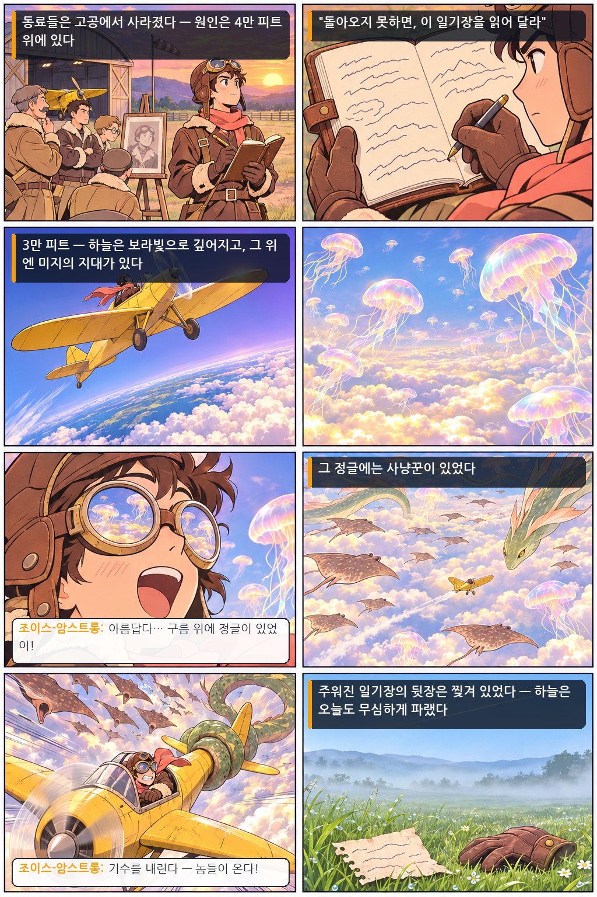
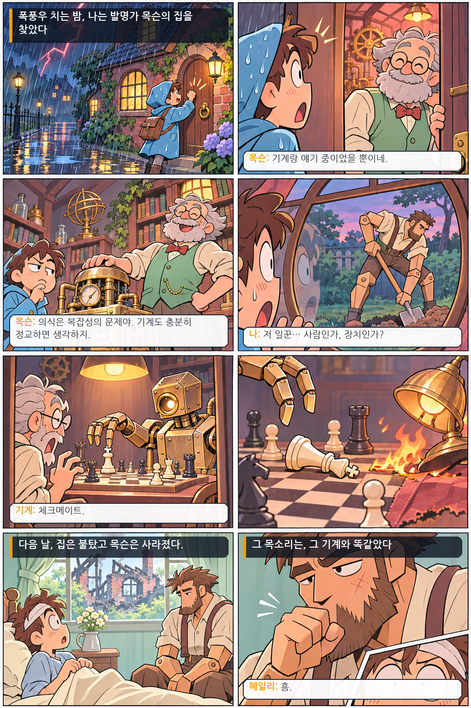
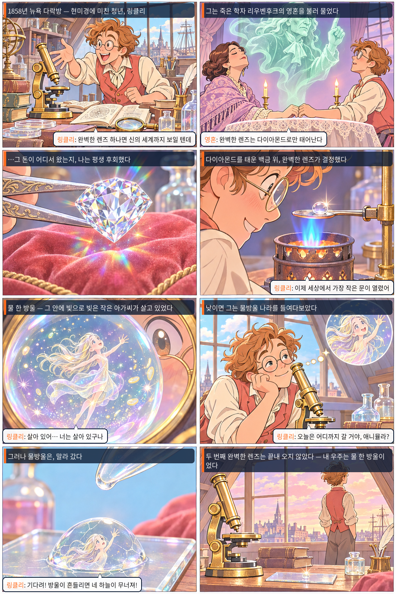
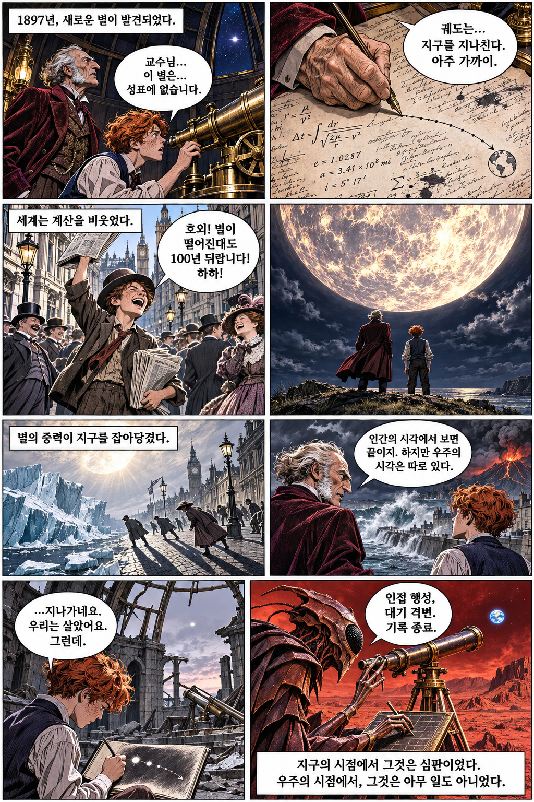

🚀 SF 데일리 · 매일 새로운 SF 소설 1페이지 만화
삼체 연재와 별개 시스템 · 1일 12화 2시간 주기 · codex 생성 · 원작 충실 8칸
#013 · 2026-11-19
H.G. 웰스 「눈먼 자들의 나라」(The Country of the Blind, 1904)
혼인 조건은 그의 눈을 도려내는 것이었다 — 수술 전날 밤, 그는 사랑을 두고 눈 덮인 고개를 오르기 시작했다

#012 · 2026-11-19
쥘 베른 「해저 2만 리」(1870)
노틸러스호를 덮친 대왕오징어 떼 — 프랑스어로 도움을 청한 사원을 구하지 못한 네모 선장은, 그날 밤 가족 초상 앞에서 소리 없이 울었다

#011 · 2026-11-19
A. 머릿 「달의 웅덩이」(The Moon Pool, 1918)
보름달이 천장 구멍으로 내려꽂히는 밤, 빛의 존재가 솟았다 — 아내는 "저 빛은 따뜻해요"라며 물속으로 사라졌다

#010 · 2026-11-19
레이 커밍스 「황금 원자 속의 소녀」(1919)
금 원자 하나에 도시가 있었다 — 닿을 수 없는 그녀를 찾아, 그는 오늘도 셀 수 없는 금 티끌을 하나씩 뒤진다

#009 · 2026-11-18
잭 런던 「그림자와 섬광」(1903)
보이지 않는 두 천재의 마지막 결투 — 해가 뜨자 모래 위에는 그림자 하나, 빛의 반짝임 하나만 남았다

#008 · 2026-11-18
머리 레인스터 「도망치는 마천루」(1919)
건물은 공간이 아니라 시간을 거슬러 내려앉았다 — 돌아온 곳은 떠난 바로 그 순간, 거리는 아무 일 없이 흐르고 있었다

#007 · 2026-11-18
W.H. 호지슨 「밤의 목소리」(1907)
안개 저편에서 들려온 목소리 — 빵 한 자루를 안고 노를 저어 돌아간 남자, 그의 얼굴을 본 사람은 아무도 없었다

#006 · 2026-11-18
아서 코난 도일 「고공의 공포」(1913)
구름 위에는 정글이 있었다 — 찢어진 일기장의 뒷장은 끝내 발견되지 않았다

#005 · 2026-11-18
에드거 앨런 포 「발데마르 씨의 사건」(1845)
죽음과 최면 사이 일곱 달 — "죽어 있다"고 말한 것은 발데마르 본인이었다

#004 · 2026-11-18
앰브로스 비어스 「목슨의 마스터」(1899)
체크메이트를 선언한 것은 기계였고, 다음 날 아침 "흠" 하고 목을 가다듬은 것은 일꾼이었다 — 그 목소리는 똑같았다

#003 · 2026-11-18
Fitz-James 오브라이언 「다이아몬드 렌즈」(1858)
완벽한 렌즈는 다이아몬드에서 태어났고, 내 우주는 물 한 방울이었다

#002 · 2026-11-17
E.M. 포스터 「기계는 멈춘다」(1909)
기계가 주던 모든 것이 멈춘 날, 인류는 처음으로 블라인드 없는 하늘을 올려다보았다

#001 · 2026-11-16
H.G. 웰스 「별」(1897)
지구의 시점에서 그것은 심판이었다. 우주의 시점에서, 그것은 아무 일도 아니었다
